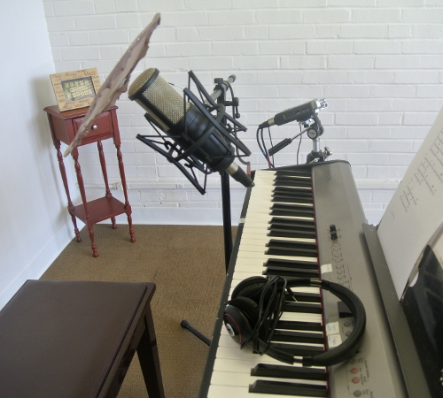

Recording & Producing Music
Selah Music Studio is also a recording studio, featuring 2 high quality microphones for voice or instruments, as well as direct connection to plug in a guitar or bass guitar, etc... Greg can also add high quality virtual instruments to your track from his keyboard connected to laptop - strings, drums, world or middle-eastern instruments - you name it.
Greg will then apply the finishing touches from his computer - adding effects such as reverb, getting the volume balanced on all the instruments, etc.. And from there, you can post your music onine of course, or even sell it at various outlets such as iTunes or Amazon music. Greg can also help you create a whole album if that is what you are looking to do, and he can even design the artwork for CD Cover, CD Back, and CD Booklet, if you want the lyrics or what have you in a booklet. Going through Discmakers.com, the physical CD's can then be ordered.
Listen below to some examples of music Greg has recorded and produced:
Greg played all the instruments above, with songwriter Karen Brummer coming in the studio to record voice. To hear more songs of Karen Brummer that Greg produced, visit
www.karenbrummermusic.bandcamp.com.
The following are some recordings made of guitarist singer-songwriter Charles Nida. Greg played djembe drum and electric guitar on keyboard.
"You're My Builder" by Charles Nida
"Before the Rocks Cry Out" by Charles Nida
"Never Give Up" by Charles Nida
To listen to a few more from Charles that Greg recorded, just visit www.reverbnation.com/charlesgreg.
Feel free to reach out and talk to Greg about your recording needs. Price can also be discussed according to what the project calls for.